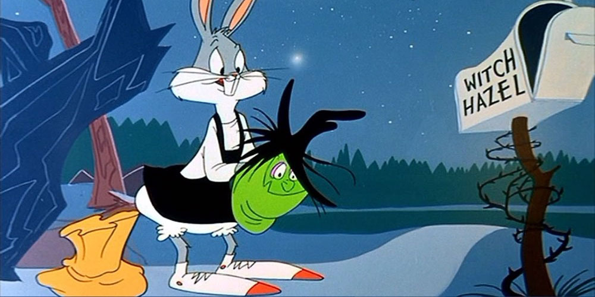
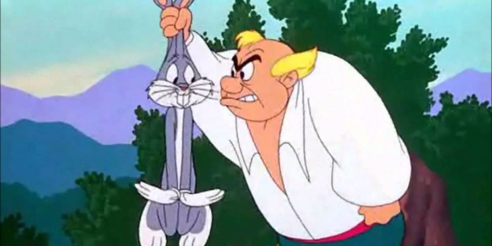
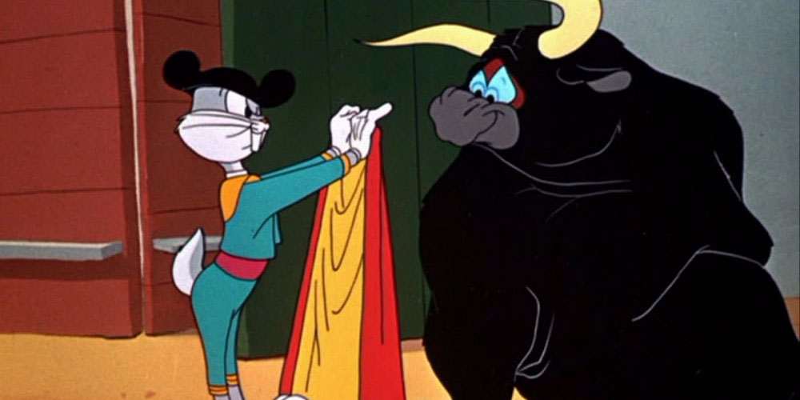

This article is about the adult version of Bugs Bunny. For the baby version of the character seen in Baby Looney Tunes, see Baby Bugs.

Bugs Bunny is an animated cartoon character, created in 1940 by Leon Schlesinger Productions

Watch This Smart Video on How Bugs Bunny Went From Ordinary Looney Tunes Character to American Icon
适用浏览器：IE8、360、FireFox、Chrome、Safari、Opera、傲游、搜狗、世界之窗.
来源：
站长素材